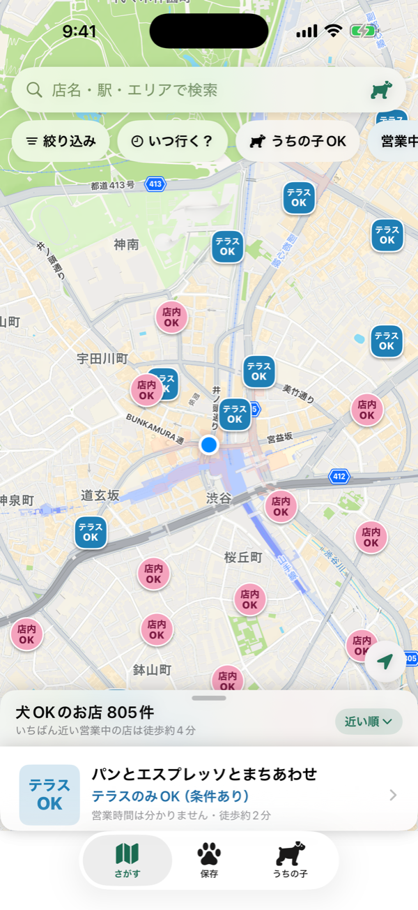
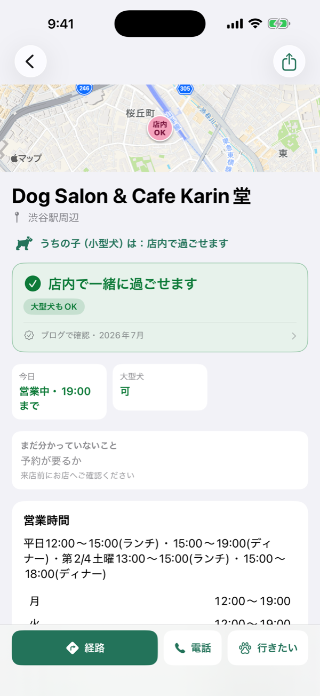

🐶☕ Puppy With Cafe
犬と行けるカフェを地図で探す iPhone アプリです。東京都内のカフェを掲載しています。
行ってみたら犬は入れなかった、という残念な思いをしないために。犬の同伴可否を「出典」と「確認日」つきで掲載し、確認できていないことは推測せずに「未確認」と表示します。


できること
- 検索バーで、店名・駅名・エリアから探す（現在地の周りも選べます）
- 「いつ行く？」で日時を選ぶと、その時間に開いているお店だけを表示
- 「うちの子」の大きさと過ごし方を設定すると、入れると明記されたお店に「うちの子OK」を表示
- お店の詳細は「店内で一緒に過ごせます」などの答えを最初に表示。根拠（出典の種類と確認月）もすぐ分かります
- 気になるお店は「行きたい」、行ったお店は「行った」に保存
- 電話、公式サイト、Apple マップ／Google マップへの経路案内、共有
地図のピンの見かた
- 店内
OK店内OK: 愛犬と店内に入れます
- テラス
OKテラス: テラス席は可。店内は不可または不明です
- ?条件を確認: 席の種類や条件を、お店の詳細で確認してください
- 🐾未確認: 犬同伴の可否を確認できていません
プライバシー
- ログイン・アカウント登録は不要です。広告・解析・トラッキングはありません。
- 現在地は「使用中のみ」の許可で、周辺のお店と距離の表示にだけ使い、端末内で処理します。送信も保存もしません。
- 「行きたい」「行った」「うちの子」の設定は端末内にだけ保存します。
- 詳しくはプライバシーポリシーをご覧ください。
ご注意
- 掲載情報は目安です。同伴条件や営業時間は変わることがあるため、来店前に店舗へご確認ください。
- 動作環境: iOS 17 以降の iPhone。無料（広告・アプリ内課金なし）。
関連ページ